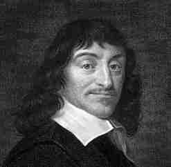

René Descartes (1596-1650)

Fransýz asýllý, ünlü matematikçi ve filozof. Ömrü boyunca, insan açýsýndan bilinmesi mümkün olan her þeyi kesin ve tamamen öðrenmeye çalýþtý. Tanrý inancýný, felsefi görüþünün merkezine yerleþtirdi. Felsefi görüþünde þüpheden yola çýkarak kesin ve sarsýlmaz bilgiye, hakikate yönelirken, matematiksel metodu felsefesine tatbik etmeye çalýþtý. Bu metoduyla skolastik ortaçað felsefesinin yýkýlmasýna ve modern felsefe anlayýþýnýn doðmasýna önayak oldu. Ona göre, Tanrýnýn varlýðý alemin varlýðýnýn delilidir. Risale-i Nur'da adý; Eflatun, Ýbn-i Sina, Bismark ve Taftazanî ile birlikte anýlmýþtýr. (Divan-ý Harb-i Örfi, s. 83) Adý, dilimize Dekart olarak girmiþtir. Meþhur "düþünüyorum, o halde varým" cümlesinin sahibidir.Descartes, 1596 yýlýnda, yüksek kilise görevlileri yetiþtirmiþ zengin bir ailenin evladý olarak, Lahey'de doðdu. La Pléche'deki Cizvit Kolejinde okudu. On sekiz yaþýna kadar bu okulda kalarak bir Roma Katoliði gibi yetiþti ve hayatý boyunca da Cizvitlere sempati duydu. Daha sonra hukuk fakültesinde okuyarak mezun oldu. Çalýþma hayatýna Fransýz ordusunda baþlayarak (1618) on yýl süreyle çalýþtý. Bu arada bütün Avrupa'yý dolaþma fýrsatýný buldu. Ordudan ayrýldýktan sonra Hollanda'ya yerleþti. Köþesine çekilerek yapayalnýz yaþadýðý gibi sýk sýk da yer deðiþtirdi. Felsefi çalýþmalarýna aðýrlýk vererek eserlerini vücuda getirdi. Ýsveç Kraliçesi'nin daveti üzerine gittiði Stockholm'de 1650 yýlýnda öldü. Cenazesi on altý yýl sonra Paris'e getirilerek burada defnedildi.
Matematiðe özel önem veren Descartes, denklemlerin derecesini küçültmekte kullanýlan bir yöntem buldu. Birleþtirici düþüncesinden hareket ederek, analitik geometriyi kurmaya yöneldi. Geometrik optikte kýrýlma yasalarýný buldu. Mekanikteki modern iþ kavramýný ilk bulan kiþi olarak kabul edilir. Matematikteki tanýmlarýn zihnimizde, doðuþtan varolduðunu ve aklýn sezgisiyle bilinen gerçekler olduðunu savundu. Yaptýðý çalýþmalarýyla matematik ilmine önemli katkýlarda bulundu.
Aklý iyi kullanmak suretiyle mutlak gerçeðe ulaþmak için çaba sarf eden Descartes, bir hakikat araþtýrýcýsýdýr. Faziletlerin tümüne birden hikmet adýný vererek, bunun da akýlla irtibatlý olduðunu savundu. Fazilete, doðru bilgi ile ulaþýlabilir. Ancak, her þeyi tam anlamýyla gerçekleþtirip ulaþmak, her yönüne vakýf olmak mümkün deðildir. Bu durum, en son ve gerçek bilgi sahibi olan Yaratýcýya mahsustur. Ýnsanýn görevi ise, bilgisinin imkan verdiði ölçüde bütün hakikatlere ulaþmaya çalýþmak olmalýdýr.
Descartes, saf akla dayalý sistematik ve bütüncül bir felsefeyi tesis etmeye çalýþtý. Ona göre gerçek bilgiye ulaþtýracak "tabii ýþýk" (Lumen Naturelle), Allah vergisi olarak insanýn fýtratýnda vardýr. Doðru ile yanlýþý birbirinden ayýrt etmeyi saðlayarak, yanlýþa imkan vermeyen bu Ýlahi ihsanýn farkýna varýldýðý ölçüde doðru olmayandan uzaklaþýlýr. Gerçeðe ulaþmak için Sað-Duyu'nun yeterli olduðu inancýndadýr. Her insanýn hayatýný devam ettirebilmesi için gerekli bütün bilimin, baþkalarýnýn yardýmýna gerek duymaksýzýn, yaratýlýþýnda mevcut olduðunu ve bunu inceleyerek en acayip bilgilere ulaþýlabileceðini savunur. Diðer yandan, gerçeðe ulaþmayý saðlayan tabii ýþýðýn varlýðýna deðil, Yaratýcýnýn varlýðýna borçlu olunduðunu belirtti. Bu nedenledir ki, felsefesinin en önemli aksiyomlarýný; Kadir-i Mutlak, Alim-i Mutlak, Hayr-ý Mutlak olan Allah'a olan kesin inanç oluþturmaktadýr. (Köprü, Sayý: 70, s. 151)
Descartes, düþünmek için bir varlýða ihtiyaç olduðu tezinden hareketle fikri binasýný, Yaratýcýnýn varlýðý temeli üzerine kurar. Temel gayesi, Yaratýcýnýn varlýðýný ispatlamak deðil, felsefesini saðlam bir zemine oturtmaktýr. Dünyadaki mevcut bilgiye ulaþýp oradan da dünya hakimiyetine ulaþma emelindedir. Dünya hakimiyeti teziyle kainata bakýþ, diðer bazý düþünürlerde olduðu gibi, onda da bir kördüðüm halini almaktadýr. Ýnsan hayatýný ve gayesini dünya saadetiyle sýnýrlý gören, ahiret inancýyla beslenmeyen fikir ve akýmlar, her ne kadar insan fýtratýndaki mükemmelliklerin farkýna varýp övseler de, yok olmalarýný kabullenip ölümden sonraki hayata, dünya hayatý kadar ehemmiyet vermemeleri, karanlýktan aydýnlýða ulaþmalarýna mani teþkil etmiþtir.
Descartes, kainat kitabýnýn okunmasýnýn gerekli olduðu, dilinin ve alfabesinin anlaþýlmasý, þifresinin çözülmesi gerektiði inancýndadýr. Bu kainat ve kendisinden baþka okunmaya, aranmaya gerek duyulacak baþka bir ilmin olmadýðýna hükmederek, araþtýrmalarýný ve düþüncelerini bu yönde geliþtirdi. Ancak, kainat kitabý; kendisinde mevcut olan ve Yaratýcýnýn isim ve sýfatlarýna ayinedarlýk yaparak, Allah'ýn varlýðýna, birliðine iþaretler taþýmasý, ebedi hayat inancý ile anlam kazanmaktadýr. Ýþte burada yani kainata bakýþ ve okuyuþta din ve felsefenin bakýþ açýlarý önem kazanmaktadýr. Descartes'ýn da dahil olduðu felsefi görüþlerde dünyanýn bizzat kendisi deðerli olup dünya hayatý temel esas alýnýrken, din açýsýndan dünya, ahiretin tarlasý hükmündedir ve Allah'a ulaþtýracak büyük temel taþlarýndan biridir.
Gözümüzle gördüðümüz varlýk alemi anlamsýz deðildir. Kainatta israfýn olmamasý, her varlýkta görülen ve müþahede edilen mükemmellik kainata bir anlam kazandýrmaktadýr. Saat ve makina mükemmellik ve düzenliliði sembolize eder. Kainatýn bunlara benzetilerek, mükemmellik ve düzenlilik vasýflarýnýn sembolü olarak görülmesi, Batýlý düþünürler tarafýndan asýrlardan beri kullanýla gelmektedir. Mükemmelliði müþahedede bir sýkýntý ve problem yaþanmazken, söz konusu harika sanatlarýn anlamlandýrýlmasýnda felsefi akýmlar boðulmaktan kurtulamamaktadýrlar. Bir sergi sarayýnýn, seyre gelenlere ve sanatlarýn mükemmellikleri karþýsýnda hayran kalanlara ifade etmesi gereken bir anlam, bir mesaj olmalýdýr.
"Bu kainat, nasýl ki, kendini icad ve idare ve tertip eden ve tasvir ve takdir ve tedbir ile bir saray gibi, bir kitap gibi, bir sergi gibi, bir temaþagah gibi tasarruf eden saniine ve katibine ve nakkaþýna delalet eder; öyle de, kainatýn hilkatindeki makasýd-ý Ýlahiyeyi bilecek ve bildirecek ve tahavvülatýndaki Rabbani hikmetleri talim edecek ve vazifedarane harekatýndaki neticeleri ders verecek ve mahiyetindeki kýymetini ve içindeki mevcudatýn kemalatýný ilan edecek ve o kitab-ý kebirin manalarýný ifade edecek bir yüksek dellal, bir doðru keþþaf, bir muhakkik üstad, bir sadýk muallim istediði ve iktiza ettiði ve her halde bulunmasýna delalet ettiði cihetiyle, elbette bu vazifeleri herkesten ziyade yapan bu Zatýn hakkaniyetine ve bu kainat Halýkýnýn en yüksek ve sadýk bir memuru olduðuna þehadet ettiði... Madem bu sanatlý ve hikmetli masnuatýyla Kendi hünerlerini ve sanatkarlýðýnýn kemalatýný teþhir etmek; ve þu süslü, zinetli nihayetsiz mahlukatýyla Kendini tanýttýrmak ve sevdirmek; ve bu lezzetli ve kýymetli hesapsýz nimetleriyle Kendine teþekkür ve hamd ettirmek; ve bu þefkatli ve himayetli umumi terbiye ve iaþe ile, hatta aðýzlarýn en ince zevklerini ve iþtihalarýn her nevini tatmin edecek bir surette izhar edilen Rabbani it'amlar ve ziyafetlerle Kendi rububiyetine karþý minnettarane ve müteþekkirane ve perestiþkarane ibadet ettirmek; ve mevsimlerin tebdili ve gece gündüzün tahvili ve ihtilafý gibi, azametli ve haþmetli tasarrufat ve icraat ve dehþetli ve hikmetli faaliyet ve hallakýyet ile Kendi uluhiyetini izhar ederek, o uluhiyetine karþý iman ve teslim ve inkýyad ve itaat ettirmek; ve her vakit iyiliði ve iyileri himaye, fenalýðý ve fenalarý izale ve semavi tokatlarla zalimleri ve yalancýlarý imha etmek cihetiyle, hakkaniyet ve adaletini göstermek isteyen perde arkasýnda birisi var." (Mektubat, s. 214)
Descartes, kainatýn ve insanýn okunmasý gerektiðine vurgu yapar. Evet, kainat büyük alem, insan-ý ekber, küçük alem ise insanýn kendisi. Bu iki alemin fýtratýnda var olan mükemmellik fen ilimlerinin bilgisi dahilindedir. "... saadet-i ebediye olmasa, bütün maneviyat kurur. O hakikatler, israf memleketine kaçarlar. Acaba dünya kadar kýymetli olan bir cevhere malik olmakla, hem daima onun zarfýný ve gýlafýný muhafaza ettikten sonra, o cevheri birden bire yere vurup kýrmak ihtimali var mýdýr? Hangi akýl kabul eder? Hem bir þahsýn bünyesindeki kuvvet, azasýndaki sýhhat, istidadýndaki kabiliyet, o þahsýn yaþayýþýna ve tekemmülüne delil olduðu gibi, kainatýn ruhuna kadar nüfuz eden hakikat-i sabite ve devam ile yaþayýþýný ima eden intizamýndaki kuvvet-i kamile ve tekemmülüne giden nizamýndaki kemal acaba haþr-i cismani yoluyla saadet-i ebediyeye delil olmaz mý?" (Ýþaratü'l-Ý'caz, s. 56)